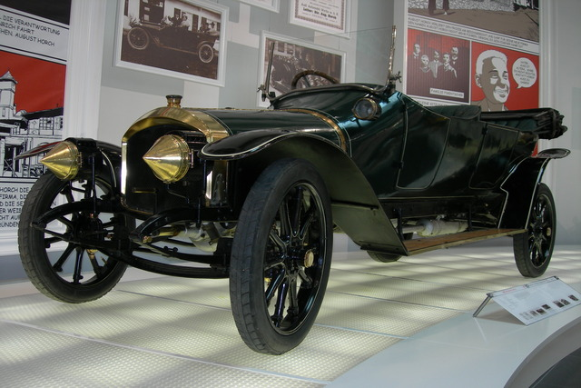
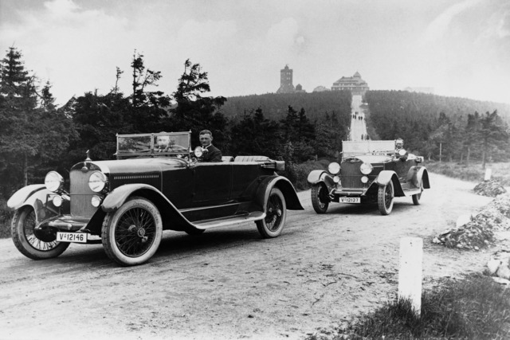

Az Audi története az 1900-as évek elejére nyúlik vissza, amikor August Horch megalapította az Autowerke GmbH-t Zwickauban, Németországban. Az első autó, amit 1901-ben gyártottak, az "A" típus volt. 1909-ben August Horch távozott a cégtől, és alapított egy másik autógyárat, ami később az Audi elődje lett. Az Audi nevet először 1910-ben használták a Horch Autógyár termékeire, és hivatalosan 1917-ben regisztrálták. Az Audi, a DKW és a Horch márkákat egyesítették 1932-ben a Auto Union nevű vállalat alatt. Az Auto Union gyártotta az első négyhengeres motorral szerelt Audi autót is. Az 1960-as években az Auto Union csatlakozott a Volkswagen csoportba, és az Audi márkát 1969-ben újraélesztették a piacra dobott Audi 100 modellel. Az Audi azóta számos innovatív autót és technológiát vezetett be, és a luxus autógyártás egyik meghatározó szereplőjévé vált a világpiacon.
 Itt mutatjuk be személyes kedvencünket az Audi kínálatából.
Audi RS6 C8
Audi Sport Quattro S1